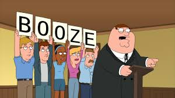

You look around the dining area. There is still a lot of food on the floor from fellow inmates however you found a map on the floor under beneath a pile of food. You got to the map and it was the guard copy so one of them manage to drop it on the floor and how did no one pick it up already or it was be certain for me to get it. When a inmate come over to you and said "Hello my name is Jess, I had a addiction with alochol as well and it the reason why I here. I was drink driving after a night out and the police arrest me" you replied with "I was a addict for 10 years and talk to my parents and they say that you need to stop so I stop for them, however the day I stole the alcohol I was wanting the stuff because I lost my job and had no money so I was down and needed a drink so I went to the nearest store which was Tesco I stole a box full of my favourite drink Guniness" Jess replied with "I love Guniness, it so good, anyway I been dealing with Mr Booze for longer than you 17 years now and I ended up in hosiptal twice because of drinking" you and Jess talk for a while talking about addiction to alcohol and how it can damage a person live with relantionships to thier family and their health. You left Jess to figure out how to get the dining area.
